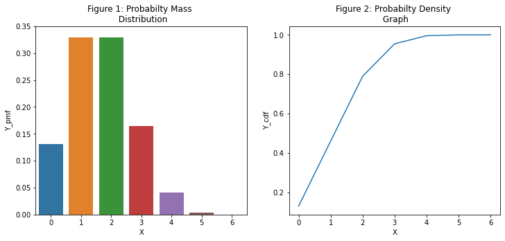
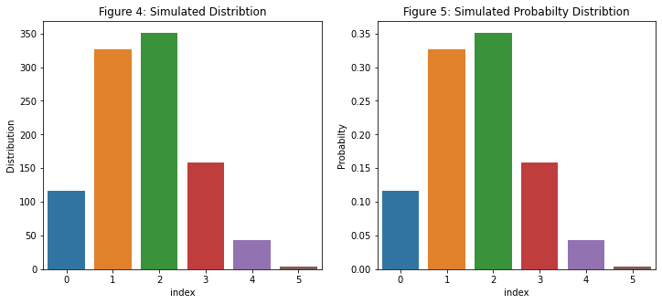
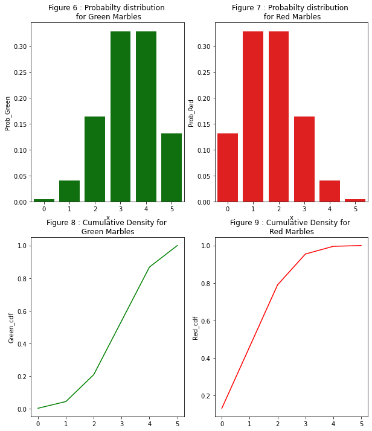

Lets explore the following problem:
There are 1 red and 2 green marbles in a bag.
What is the probabilty of getting exactly 1 red marble in 2 trials?
The sample space is {RR,RG, GR, GG}
P(Red Marble) = 1/3 P(Green Marble) = 2/3
RR = 1/3 * 1/3 = 1/9 = 0.11 --> Probabilty of getting exactly 2 reds in 2 trials
RG = 1/3 * 2/3 = 3/9 = 0.22 --> Probabilty of getting exactly 1 red in 2 trials - red in first trial only
GR = 2/3 * 1/3 = 2/0 = 0.22 --> Probabilty of getting exactly 1 red in 2 trials - red in second trial only
GG = 2/3 * 2/3 = 4/9 = 0.44 --> Probabilty of getting 0 red in 2 trials
Since we can get one red in two trials two ways {RG, GR} then the probabilty of getting exactly 1 read in 2 trials is 0.22 + 0.22 = 0.44
Answer: 0.44
The sample space provides the intuition to finding the answer. As the number of trials incease so will the sample space and at some point it would be easier to use a program to answer this question.
Lets look at doing the same using bino.pmf function. The probabilty mass function is ideal for discrete values.
from scipy.stats import binom
from tabulate import tabulate
import numpy as np
import pandas as pd
import matplotlib.pyplot as plt
import seaborn as sns
x = range(0,4)
binomial_probabilty = binom.pmf(k=x, n=2, p=1/3)
print(binomial_probabilty)
[0.44444444 0.44444444 0.11111111 0. ]
x = range(0,4)
[print(f'Probability of getting exactly {i} red marble in 2 trials is {binom.pmf(k=i, n=2, p=1/3):.3f}')
for i in x ]
Probability of getting exactly 0 red marble in 2 trials is 0.444
Probability of getting exactly 1 red marble in 2 trials is 0.444
Probability of getting exactly 2 red marble in 2 trials is 0.111
Probability of getting exactly 3 red marble in 2 trials is 0.000
[None, None, None, None]
Now, lets solve a slightly challenging version of the question with increased trial.
Question:
A bag has one red marble and two green marbles. What is the probabilty of getting exactly three red marbles in 5 trials?
number_of_success = 3
number_of_trials = 5
prob_of_success = 1/3
answer = binom.pmf(k=number_of_success, n=number_of_trials, p=prob_of_success)
print(f'The probability of getting exactly exactly 3 red marbles in 5 trials is {answer:.2f}.')
The probability of getting exactly exactly 3 red marbles in 5 trials is 0.16.
[print(f'Probability of getting exactly {i} red marble in 5 trials is {binom.pmf(k=i, n=5, p=1/3):.3f}')
for i in range(0,6) ]
Probability of getting exactly 0 red marble in 5 trials is 0.132
Probability of getting exactly 1 red marble in 5 trials is 0.329
Probability of getting exactly 2 red marble in 5 trials is 0.329
Probability of getting exactly 3 red marble in 5 trials is 0.165
Probability of getting exactly 4 red marble in 5 trials is 0.041
Probability of getting exactly 5 red marble in 5 trials is 0.004
[None, None, None, None, None, None]
x = range(0,6)
print(x)
binomial_probabilty = binom.pmf(k=x, n=5, p=1/3)
print(binomial_probabilty)
range(0, 6)
[0.13168724 0.32921811 0.32921811 0.16460905 0.04115226 0.00411523]
Note above that pmf function has the ability to broadcast over a range of values. In this case its 'x' and we can find out the pmf for 0 occurance of red, 1 occurance of red, 2 occurance of red up to 5 occurance of red. Note the probabilty of getting 4 or 5 occurance of red in 5 tries is almost zero.
The binom function has a frozen function for easier examination of the distribution.
#?binom
frozen = binom(5,1/3) # number of trials is 5 and prob of success is 1/3
print(frozen.pmf(x)) # show all chances for the 5 trials
print(frozen.pmf(3)) # show prob of exactly 3 reds in 5 trials
[0.13168724 0.32921811 0.32921811 0.16460905 0.04115226 0.00411523]
0.16460905349794233
# Probabilty of success is 1/3
# Find probabilty of success and it should be 1/3 or 0.333333
# P(RRRRR) = x*x*x*x*x = 0.00411523
0.00411523**(1/5)
0.3333333926666455
# Lets do some graphing for intuition
x = range(0,7) # adding the 6th number for better visibilty on graphs.
y_pmf = [frozen.pmf(i) for i in x]
y_cdf = [frozen.cdf(i) for i in x]
tmp = pd.DataFrame({'X':x, 'Y_pmf':y_pmf, 'Y_cdf':y_cdf})
#tmp
print(tabulate(tmp,headers = 'keys', tablefmt = 'pretty'))
+---+-----+-----------------------+---------------------+
| | X | Y_pmf | Y_cdf |
+---+-----+-----------------------+---------------------+
| 0 | 0.0 | 0.13168724279835395 | 0.13168724279835398 |
| 1 | 1.0 | 0.3292181069958847 | 0.4609053497942387 |
| 2 | 2.0 | 0.3292181069958847 | 0.7901234567901236 |
| 3 | 3.0 | 0.16460905349794233 | 0.9547325102880659 |
| 4 | 4.0 | 0.041152263374485576 | 0.9958847736625515 |
| 5 | 5.0 | 0.0041152263374485566 | 1.0 |
| 6 | 6.0 | 0.0 | 1.0 |
+---+-----+-----------------------+---------------------+
fig, axes = plt.subplots(1,2,figsize=(12, 5))
sns.barplot(data=tmp, x = 'X', y='Y_pmf', ax = axes[0])
axes[0].set(title = 'Figure 1: Probabilty Mass \n Distribution', ylim={0,0.35})
sns.lineplot(data=tmp, x = 'X', y='Y_cdf', ax = axes[1])
axes[1].set(title = 'Figure 2: Probabilty Density \n Graph');

Note from Figure 1, the probablity of getting exactly 1 red or 2 reds are high about 33% each. This means 66% chance of getting 2 or 3 reads in 5 trials. Figure 2 is showing probabilty density approaching 1 since probabilty should add to 1. Note the gradient in Figure 2 is becoming smaller as it is approaching 1 indicating a very small chance of getting 4 reds in 5 trials and almost no chance of getting 5 reds or 6 reds in 5 trials.
Getting 6 reds in 5 trials is NOT possible.
Next generate the actual distribution from this simulation.
distribution = frozen.rvs(1000)
distribution
array([2, 3, 2, 3, 1, 3, 2, 1, 1, 3, 2, 2, 4, 1, 2, 2, 1, 2, 2, 2, 2, 1,
3, 0, 0, 4, 3, 2, 1, 2, 2, 2, 2, 2, 1, 2, 2, 0, 1, 1, 0, 1, 2, 2,
2, 2, 1, 3, 3, 1, 1, 3, 2, 4, 1, 2, 1, 0, 3, 1, 2, 2, 2, 1, 1, 1,
1, 2, 2, 1, 3, 1, 2, 1, 1, 3, 3, 3, 1, 0, 2, 1, 2, 1, 1, 0, 2, 3,
3, 1, 3, 3, 1, 0, 2, 2, 2, 2, 2, 1, 2, 1, 1, 0, 0, 3, 2, 1, 1, 1,
4, 1, 1, 3, 2, 2, 2, 1, 1, 2, 1, 1, 1, 2, 2, 2, 0, 1, 0, 1, 1, 2,
3, 1, 1, 1, 2, 3, 1, 2, 2, 2, 1, 2, 3, 3, 1, 2, 3, 2, 3, 3, 2, 2,
1, 4, 1, 2, 1, 3, 2, 2, 4, 0, 4, 1, 2, 2, 0, 2, 2, 1, 2, 1, 3, 1,
3, 1, 2, 2, 2, 3, 2, 1, 1, 2, 1, 0, 0, 0, 1, 0, 5, 2, 3, 2, 2, 1,
0, 1, 1, 1, 0, 2, 2, 2, 2, 1, 2, 0, 2, 2, 1, 0, 1, 0, 2, 2, 2, 2,
1, 1, 1, 1, 3, 3, 2, 2, 3, 2, 0, 3, 0, 2, 3, 1, 2, 0, 1, 2, 0, 2,
2, 4, 1, 3, 2, 2, 1, 4, 2, 2, 2, 3, 2, 1, 0, 0, 1, 3, 4, 2, 1, 1,
2, 0, 0, 2, 2, 1, 4, 2, 0, 2, 3, 1, 1, 1, 1, 1, 2, 1, 2, 2, 4, 2,
3, 1, 2, 1, 2, 2, 2, 0, 1, 2, 1, 1, 1, 2, 1, 3, 3, 1, 1, 0, 2, 2,
2, 1, 1, 2, 2, 1, 1, 1, 2, 2, 1, 1, 2, 0, 4, 1, 1, 3, 3, 1, 3, 2,
1, 1, 2, 1, 0, 0, 1, 1, 2, 0, 0, 1, 2, 2, 2, 0, 2, 0, 1, 3, 1, 1,
1, 0, 0, 3, 3, 1, 1, 1, 3, 2, 1, 1, 2, 2, 1, 3, 2, 2, 4, 4, 1, 0,
1, 3, 2, 2, 3, 2, 2, 0, 1, 2, 2, 2, 1, 2, 0, 4, 1, 2, 3, 1, 1, 0,
1, 0, 1, 0, 0, 2, 2, 0, 3, 2, 0, 2, 1, 1, 1, 2, 2, 2, 2, 0, 2, 3,
3, 1, 3, 2, 1, 3, 2, 2, 1, 4, 2, 0, 2, 2, 1, 1, 3, 1, 1, 1, 1, 3,
3, 2, 1, 1, 2, 2, 1, 2, 1, 3, 2, 3, 1, 1, 2, 1, 2, 1, 0, 2, 3, 3,
0, 3, 2, 1, 1, 1, 3, 2, 3, 0, 3, 1, 2, 0, 2, 1, 0, 1, 2, 3, 1, 1,
2, 1, 1, 2, 3, 1, 3, 2, 2, 3, 1, 1, 2, 1, 2, 0, 0, 3, 0, 2, 2, 2,
2, 2, 2, 2, 0, 1, 1, 3, 1, 2, 2, 2, 2, 1, 0, 1, 3, 3, 1, 3, 1, 4,
3, 2, 2, 1, 1, 1, 3, 1, 1, 1, 1, 1, 2, 3, 3, 3, 3, 0, 1, 0, 2, 2,
1, 2, 2, 2, 3, 2, 4, 1, 3, 2, 1, 1, 0, 2, 2, 1, 0, 3, 1, 2, 2, 2,
3, 3, 1, 3, 4, 2, 4, 1, 0, 3, 4, 1, 1, 1, 1, 1, 1, 3, 2, 0, 2, 3,
0, 2, 1, 3, 0, 3, 1, 3, 2, 0, 2, 2, 1, 5, 2, 3, 2, 0, 1, 2, 3, 2,
2, 4, 4, 2, 2, 3, 3, 2, 2, 0, 2, 3, 4, 1, 1, 3, 1, 1, 2, 0, 1, 1,
2, 4, 3, 2, 2, 2, 1, 2, 2, 2, 3, 1, 1, 3, 3, 3, 1, 1, 2, 2, 1, 1,
3, 2, 3, 3, 2, 4, 1, 2, 2, 3, 1, 1, 1, 3, 1, 0, 0, 4, 1, 3, 4, 3,
2, 3, 0, 3, 1, 2, 1, 2, 1, 1, 2, 1, 2, 1, 2, 3, 2, 1, 3, 2, 2, 2,
4, 3, 2, 1, 2, 1, 2, 1, 1, 2, 2, 2, 2, 1, 1, 2, 2, 1, 0, 1, 2, 2,
2, 0, 3, 2, 2, 2, 1, 3, 1, 2, 3, 1, 2, 3, 1, 1, 2, 1, 2, 2, 1, 2,
1, 3, 1, 3, 1, 1, 4, 2, 2, 1, 2, 0, 1, 0, 2, 1, 1, 0, 1, 0, 2, 1,
2, 1, 0, 2, 2, 2, 0, 1, 1, 1, 1, 4, 2, 0, 0, 2, 1, 1, 2, 1, 3, 1,
3, 2, 0, 2, 2, 2, 2, 2, 2, 0, 2, 2, 1, 2, 4, 1, 0, 2, 0, 2, 4, 2,
1, 1, 2, 1, 2, 2, 3, 0, 2, 2, 1, 2, 0, 0, 1, 0, 2, 2, 1, 3, 1, 1,
2, 3, 3, 2, 1, 0, 1, 2, 4, 4, 5, 2, 0, 1, 1, 2, 2, 3, 1, 0, 3, 2,
0, 1, 3, 0, 0, 2, 1, 2, 1, 2, 2, 1, 4, 1, 2, 2, 0, 1, 4, 1, 3, 2,
3, 2, 1, 3, 0, 1, 3, 2, 1, 1, 1, 1, 1, 2, 3, 4, 1, 2, 1, 2, 0, 2,
2, 2, 2, 1, 3, 1, 3, 1, 2, 1, 2, 2, 4, 1, 3, 2, 2, 0, 2, 0, 2, 0,
1, 2, 1, 1, 1, 0, 2, 1, 1, 0, 1, 1, 3, 4, 3, 1, 1, 1, 2, 1, 3, 2,
2, 2, 2, 2, 5, 3, 2, 2, 3, 1, 4, 3, 2, 3, 0, 3, 3, 0, 2, 1, 0, 3,
1, 2, 2, 1, 2, 0, 1, 3, 0, 3, 2, 1, 1, 1, 3, 2, 1, 2, 1, 4, 2, 1,
1, 1, 1, 1, 2, 3, 0, 2, 2, 3])
df0 = pd.DataFrame({'Distribution':distribution})
df1 = df0['Distribution'].value_counts(sort=False).reset_index()
df1['Probabilty'] = df1['Distribution']/df1['Distribution'].sum()
#df1
print(tabulate(df1,headers = 'keys', tablefmt = 'pretty'))
+---+-------+--------------+------------+
| | index | Distribution | Probabilty |
+---+-------+--------------+------------+
| 0 | 0.0 | 117.0 | 0.117 |
| 1 | 1.0 | 326.0 | 0.326 |
| 2 | 2.0 | 351.0 | 0.351 |
| 3 | 3.0 | 159.0 | 0.159 |
| 4 | 4.0 | 43.0 | 0.043 |
| 5 | 5.0 | 4.0 | 0.004 |
+---+-------+--------------+------------+
fig, axes = plt.subplots(1,2,figsize=(12, 5))
sns.barplot(data=df1, x = 'index', y = 'Distribution', ax = axes[0])
axes[0].set(title = 'Figure 4: Simulated Distribtion')
sns.barplot(data=df1, x = 'index', y = 'Probabilty', ax = axes[1])
axes[1].set(title = 'Figure 5: Simulated Probabilty Distribtion');

From Figure 4 and 5, the simulation is showing that out of a 1000 experiments, exactly 3 reds are showing 159 times with a probabilty of 0.159. From Figure 1, this is about 0.165.
Now lets explore the probability of red and green marbles.
x = range(0,6)
print(x)
binomial_probabilty_green = binom.pmf(k=x, n=5, p=2/3)
binomial_probabilty_red = binom.pmf(k=x, n=5, p=1/3)
green_cdf= binom.cdf(k=x, n=5, p=2/3)
red_cdf= binom.cdf(k=x, n=5, p=1/3)
print(binomial_probabilty_green)
print(binomial_probabilty_red)
print(green_cdf)
print(red_cdf)
range(0, 6)
[0.00411523 0.04115226 0.16460905 0.32921811 0.32921811 0.13168724]
[0.13168724 0.32921811 0.32921811 0.16460905 0.04115226 0.00411523]
[0.00411523 0.04526749 0.20987654 0.53909465 0.86831276 1. ]
[0.13168724 0.46090535 0.79012346 0.95473251 0.99588477 1. ]
df2 = pd.DataFrame({'x':x, 'Prob_Green':binomial_probabilty_green,
'Prob_Red':binomial_probabilty_red,
'Green_cdf':green_cdf,
'Red_cdf':red_cdf
})
#df2
print(tabulate(df2,headers = 'keys', tablefmt = 'pretty'))
+---+-----+----------------------+-----------------------+----------------------+---------------------+
| | x | Prob_Green | Prob_Red | Green_cdf | Red_cdf |
+---+-----+----------------------+-----------------------+----------------------+---------------------+
| 0 | 0.0 | 0.004115226337448564 | 0.13168724279835395 | 0.004115226337448562 | 0.13168724279835398 |
| 1 | 1.0 | 0.04115226337448562 | 0.3292181069958847 | 0.04526748971193418 | 0.4609053497942387 |
| 2 | 2.0 | 0.16460905349794241 | 0.3292181069958847 | 0.2098765432098766 | 0.7901234567901236 |
| 3 | 3.0 | 0.3292181069958847 | 0.16460905349794233 | 0.5390946502057614 | 0.9547325102880659 |
| 4 | 4.0 | 0.32921810699588466 | 0.041152263374485576 | 0.8683127572016461 | 0.9958847736625515 |
| 5 | 5.0 | 0.13168724279835387 | 0.0041152263374485566 | 1.0 | 1.0 |
+---+-----+----------------------+-----------------------+----------------------+---------------------+
fig, axes = plt.subplots(2,2, figsize=(10,12))
sns.barplot(data=df2, x='x', y='Prob_Green', ax=axes[0,0], color = 'green')
axes[0,0].set(title='Figure 6 : Probabilty distribution \n for Green Marbles')
sns.barplot(data=df2, x='x', y='Prob_Red', ax=axes[0,1], color = 'red')
axes[0,1].set(title='Figure 7 : Probabilty distribution \n for Red Marbles')
sns.lineplot(data=df2, x=x, y='Green_cdf', ax=axes[1,0], color = 'green')
axes[1,0].set(title='Figure 8 : Cumulative Density for \n Green Marbles ')
sns.lineplot(data=df2, x=x, y='Red_cdf', ax=axes[1,1], color = 'red')
axes[1,1].set(title='Figure 9 : Cumulative Density for \n Red Marbles ');

From Figure 6, it is evident that higher probabilty of getting 3, 4 of 5 green marbles. From Figure 8, getting 2 greens or less occur approximately 20% of the time and 80% of the time it is 3 or more.
From Figure 9, getting 2 or less is approximately 80%.
There is higher probabilty of getting zero reds in 5 tries because there is one one red in the bag. Getting zero red in 5 tries means getting 5 green marbles. Therefore the sample space would be {GGGGG}.
P(GGGGG) = 2/3 * 2/3 * 2/3 * 2/3 * 2/3 = 0.1617 ~ probabilty of zero reds or all greens